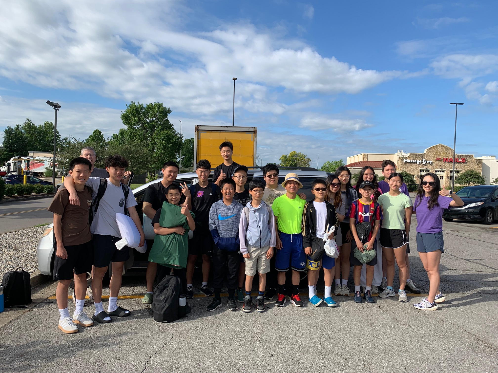

Harlan, Kentucky Trip
My Week in the Mountains
A service-trip story by Ian Wu: traveling, helping, learning, laughing, and making memories.
Background
Where is Harlan?
Harlan is a small Appalachian town in eastern Kentucky. It sits in a rugged mountain valley near the Cumberland River.
It was first settled in 1796 and was once called Mount Pleasant.
Mountain town
A quick history
Coal, trains, and a famous nickname
- The railroad arrived in 1911.
- Harlan became important for coal and lumber shipping.
- Coal miners fought for better pay and safer work.
- Because of those hard labor conflicts, people called it “Bloody Harlan.”
The week at a glance
Five days, one big adventure
Arrival
Work day
Giveaway
Lake day
Home
Every day had work, chapel, food, free time, and bedtime at 10:30.
Monday
Travel + first job
- Left McDonald’s at 9:15 and drove about 3 hours.
- We got to a McDonald for lunch.
- Started helping at Mr. Mills’s house.
- Worked on destroying ramp and pressure washed a wall.
Monday night
Dorms, dinner, chapel, and stars
We got settled in the dorms, some of us showered, and then we went to dinner and chapel. After that we played card games until 22:30.
I ate too many burgers earlier, so my stomach was not happy!
Tuesday
Teamwork day
- Woke up at 6:45.
- Breakfast and announcements at 8:00.
- Took off shutters, took of the stairs, and worked on rebulding the new stairs.
- Pressure washed, painted shutters, and helped build a porch path.
Tuesday night
After chapel, we chilled and played pool until bedtime.
Wednesday
The giveaway
Only a few of us went at first: me, William, Vincent, and Alec.
- Our driver showed us another side of Harlan.
- At the giveaway, we unpacked, restocked, and organized items.
- After we were done we got paid.
Wednesday night
A special chapel
After the giveaway, we went to a baptism. It was really cool.
That night, chapel was special because we got to go outside.
Thursday
Kitchen duty + helping another house
- We woke up earlier for kitchen duty.
- We ate fast and helped with dishes.
- Adults went to the Mills house.
- The rest of us helped at the Majors house with insulation.
Thursday fun
Lake day!
At 11:00, we went to the lake. Samuel ,my friend, helped me learn to swim, and I learned in about 5 minutes.
Later, we had to take shelter for a bit, then cleaned the dorms, showered, ate meatloaf, helped with dishes, went to chapel, and hung out.
🍗⛽
Friday
The trip home
- We cleaned all the dorms and packed up.
- Our car got stuck in the mud, so we had to push it.
- We stopped at KFC, took pictures, and ate lunch.
- We stopped at Buc-ee’s for gas and got back at 3:15.
What I learned
He is with us.
- Always help others.
- Every place every person Jesus is with them.
Final thought
Overall, it was a great experience.
Harlan gave us hard work, good food, chapel, friends, mud, swimming, and lots of stories to remember.
